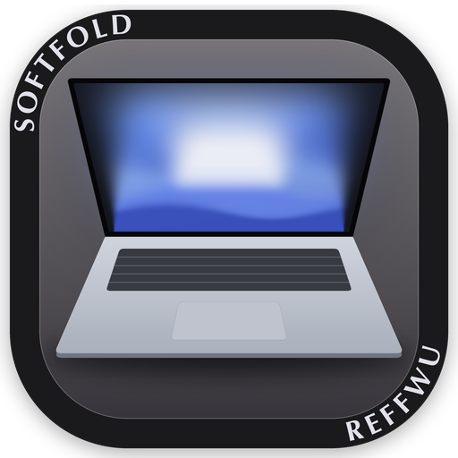
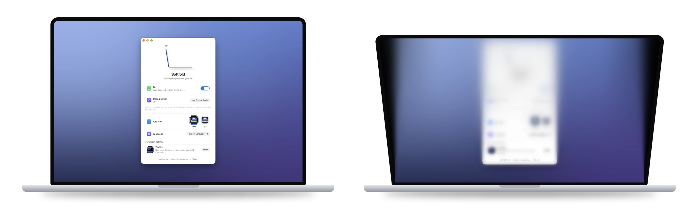

Softfold
Close the lid, and your desktop folds away softly.
Softfold moves with your MacBook's hinge. Lower the lid and your live desktop leans and softly blurs; lift it and everything comes back, sharp.
Download for Mac
Free · macOS 14 or later · Signed and notarized by Apple

Follows the real angle
Reads the lid angle sensor directly, so the fold matches your hand in real time.
Upright to your eyes
The picture is shaped against the tilt, so as the lid leans forward what you see still stands straight.
Frames stay in memory
Screen Recording is used only to draw the fold. Nothing is saved or sent.
Requires a MacBook with Apple silicon and a lid angle sensor, and macOS 14 or later.